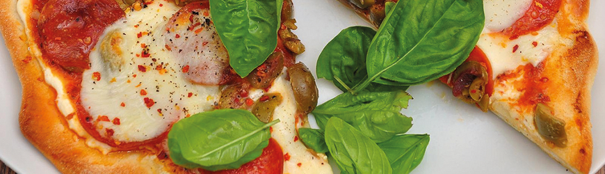

Delicious pizza with basil and mushrooms
Pizza is a type of food that was created in Italy. It is usually made by putting "toppings" (such as cheese, sausage, pepperoni, vegetables, tomatoes, spices and herbs) over a piece of bread covered with sauce; most often tomato, but sometimes butter-based sauces are used.